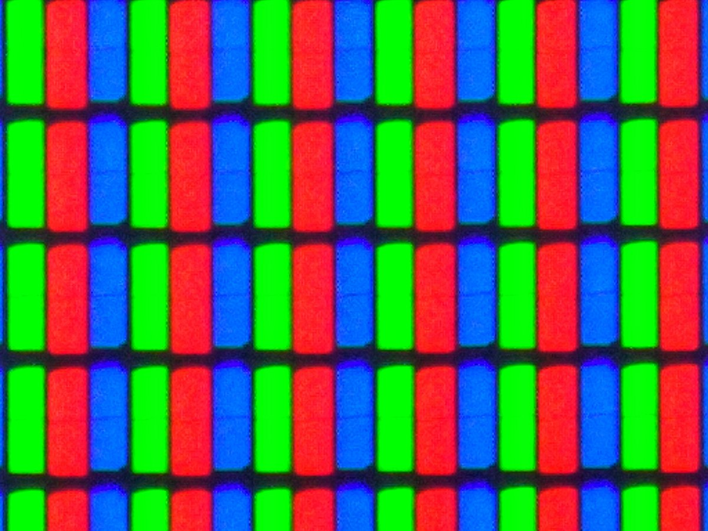
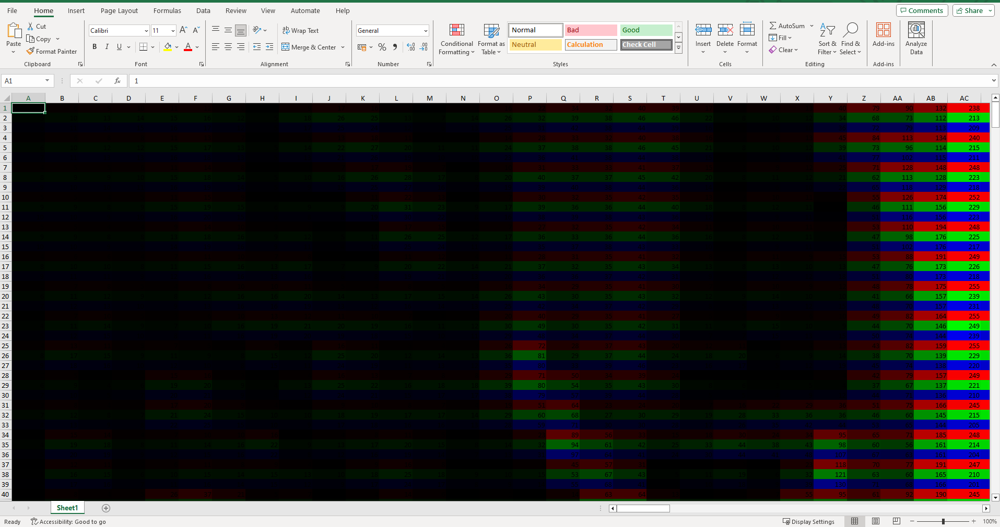
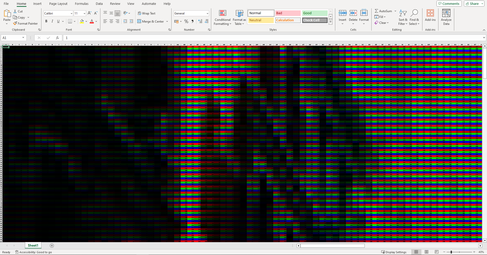
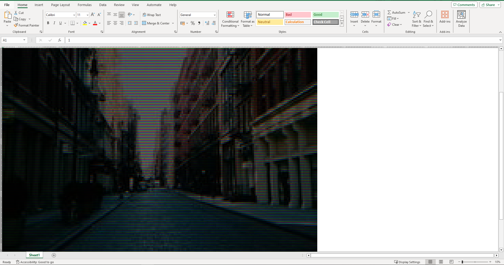

Cover image taken from Unstable Diffusion
Summary: Introduction A few days ago, I saw this video by Derek Muller on his channel Veritasium1 and came to know about the discovery of blue LED by Shuji Nakamura2. It was a nice video, (I highly recommend watching it) and I was thinking of how significant that discovery was. To begin with, it led to the creation of smart LED screen that you see on mobile phones, smart TVs, tablets or any other current-era electronic devices.
A few days ago, I saw this video by Derek Muller on his channel Veritasium1 and came to know about the discovery of blue LED by Shuji Nakamura2. It was a nice video, (I highly recommend watching it) and I was thinking of how significant that discovery was.
To begin with, it led to the creation of smart LED screen that you see on mobile phones, smart TVs, tablets or any other current-era electronic devices. The red and green LED were discovered in 1962 and 1958 respectively, long before the blue LED was invented in 1993. The LED or Light Emitting Diode is a semiconductor device that emits light when electricity is passed through it. Now, if you are interested in the physics of how that works, Muller explains it beautifully1, but what I was interested in was to find a simple way to actually see how these colours can be mixed together and create beautiful pictures.
So, I had an idea, instead of using a physical LED screen and may be zooming in with a high quality digital camera (which I don’t have), I can simulate the same using a row column structure. And the most popular row column structure is the spreadsheet. So, let’s use a spreadsheet to see if we can create something similar to LED screen. I will describe more in detail.
While I was forming this idea in my head, I found another video by Matt Parker in his YouTube channel Standup Maths3, where he actually shows this idea. The video was about 8 years old, last comment was about 4 years old, and it looked to me that I have found a hidden gem. However, he did not share the code he used to create it, so I decided to replicate his idea on my own and share it with you.
Now behind an LED screen, there are thousands of small LEDs, which are arranged in a row and column structure. Each of these LED screen is either red, green and blue. If we pass the electricity to a part of them, it will emit light of that colour, and the amount of electricity will control the intensity of the light.
Here is a very close up view of a full HD LED TV screen taken from Wikipedia.

In the spreadsheet, we will do something similar. For each row, we will colour them as red, green and blue alternatively, till the end of the Excel sheet. Each of these cells will represent an LED. In each cell of the spreadsheet, we will write a number that will indicate how much electricity is passed through that cell, in turn, how bright that cell would light up in its own colour. Finally, we will try to see if we can create a picture that would look like the LED screen.
To experiment with this, we will try to show this image on our custom-made LED screen.
For this, we will be using only two python libraries.
opencv for reading the image.XlsxWriter for creating the spreadsheet.First we read the image. Since opencv by default reads the image as BGR mode, (i.e., the blue channel comes first), we need to convert it to RGB mode.
import cv2
import xlsxwriter as xl
img = cv2.imread('./test.jpg')
img = cv2.cvtColor(img, cv2.COLOR_BGR2RGB)
print(img.shape)
The shape of the image turns out to be 200 pixels wide, 200 pixels height and 3 channels (red, green and blue). Now, for each pixel, we will have a cell in the spreadsheet, referring to an LED in the screen.
Next, we will write the value of the channel of each pixel in the spreadsheet. We will use the XlsxWriter library to do this. This will be analogus to the amount of electricity being passed through each cell. However, we do this in a special way.
Basically, the values from red, green and blue channels appear in this order one by one in the spreadsheet, since this is how we are doing to arrange the colours for the LED.
workbook = xl.Workbook('output.xlsx')
worksheet = workbook.add_worksheet()
# write the numbers on the worksheet
for i in range(h):
for j in range(w):
worksheet.write_number(3 * i, j, img[i, j, 0])
worksheet.write_number(3 * i + 1, j, img[i, j, 1])
worksheet.write_number(3 * i + 2, j, img[i, j, 2])
Now to add the actual LED like colour to the spreadsheet, we need to use conditional formatting. To understand why, think of the first row. These will represent the red LEDs. If any cell has a low value, that means it passes low electricity to that LED, so the LED will light as be a dimmed red. However, if any cell has a large value, it passes high electricity to the LED in that cell, and the LED will light up as a bright red. For the next row, same thing happens, but with green LED and then with blue LED, etc. So, to simulate this, we can conditionally format the cell with red LED with a 2 colour scale. If the number is 0, do not light up, i.e., colour the cell black. If the number is 255 (the maximum possible value for a pixel, this is because opencv represents the image pixels using 8 bit numbers so they go from 0 to 255 only, 256 possible values), then we should colour it bright red.
# simulate the red LEDs
for i in range(h):
worksheet.conditional_format(3*i, 0, 3*i, w-1, {
'type': '2_color_scale',
'min_type': 'num', 'max_type': 'num',
'min_value': 0,'max_value': 255,
'min_color': '#000000', 'max_color': '#FF0000'
})
And we simulate the green and blue LEDs.
# simulate the green LEDs
for i in range(h):
worksheet.conditional_format(3*i + 1, 0, 3*i + 1, w-1, {
'type': '2_color_scale',
'min_type': 'num', 'max_type': 'num',
'min_value': 0,'max_value': 255,
'min_color': '#000000', 'max_color': '#00FF00'
})
# simulate the blue LEDs
for i in range(h):
worksheet.conditional_format(3*i + 2, 0, 3*i + 2, w-1, {
'type': '2_color_scale',
'min_type': 'num', 'max_type': 'num',
'min_value': 0,'max_value': 255,
'min_color': '#000000', 'max_color': '#0000FF'
})
Now, it’s the time for the grand finale. But before you open the Excel file, one last thing is left. You need to close the workbook from python, otherwise your spreadsheet reading software won’t be able to open it.
# close workbook
workbook.close()
Okay, now I opened the Excel file, output.xlsx.

Ahh! not very pretty, nothing like we thought it would be. Wait, the pixels are usually very small, so are these tiny LEDs. Let us try to zoom out a bit.

Once we are at 40%, well, you can start to see some patterns. But not quite there yet. Let us try to zoom out a bit more and make these cells, really really tiny.

Well, now you can see the image, at least some pixelated version of it. Turns out, we cannot zoom out any further than this in my machine. The reason it, this entire spreadsheet that you are seeing, is again visible through thousands of tiny LEDs. So what you are seeing here, is actually a spreadsheet of a spreadsheet 😎 . But even at this zoomed out level, it still needs to have some differentiating pixels for showing the row and column gridlines, and this is why it does not allow zooming out any further than this. But if we could, we could really make a complete custom-made digital LED screen, on our digital LED screen 😏 .
Why It Was Almost Impossible to Make the Blue LED - Veritasium. YouTube Video ↩︎
Shuji Nakamura - Wikipedia. https://en.wikipedia.org/wiki/Shuji_Nakamura ↩︎
Stand-up comedy routine about Spreadsheets - Standup Maths. YouTube Video ↩︎
{kind=link}